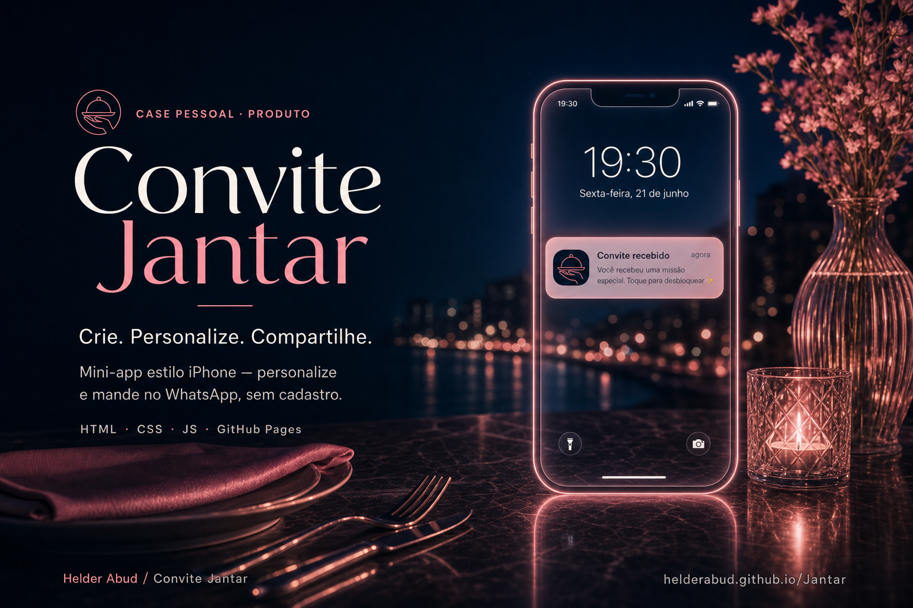

Não é só uma mensagem é uma experiência
É um mini-app no celular: com convite interativo, Escolha do jantar e dia do encontro!
Mini-app · WhatsApp · Sem cadastro
Transforme um simples “bora jantar?” numa experiência interativa. Criado para WhatsApp. Sem aplicativo. Sem cadastro.
Free: montar e ver. Enviar link = Pro (1 envio por pagamento).

Fluxo
Uma linha do tempo. Sem enrolação.
Abre o editor e define nomes.
Textos, comida, WhatsApps.
A config viaja no próprio URL.
Manda no WhatsApp (Pro).
Abre no celular — parece um iPhone.
Notificação, IA, missão, calendário.
Responde com um toque.
Demonstração
Desce a página. O telefone acompanha a história.
É um mini-app no celular: com convite interativo, Escolha do jantar e dia do encontro!
Notificação → “IA” → missão (botão que foge) → comida → calendário.
Nomes, textos e dois WhatsApps. A config viaja no próprio link.
Free: montar e ver. Enviar = Pro (1 licença por pagamento).
Passo a passo
Do editor ao WhatsApp — sem cadastro.
Entra no formulário e começa a personalizar.
Abrir editor →Quem convida, quem recebe, e os números para envio e resposta.
No Free podes montar e ver o convite completo antes de pagar.
Só ver = Free. Para copiar, encurtar ou enviar = Pro (1 envio por pagamento).
Ver Pro →Com Pro ativo, manda o link. Uma licença = um envio (WA, IG ou copiar).
Abre no celular, desbloqueia, escolhe e responde com um toque.
Ver demo →Produto
O essencial, sem enrolação.
A configuração viaja no `#c=`. Sem conta. Sem servidor de convites.
Bloqueio, notificação, “IA”, missão com botão que foge, comida e calendário.
Feito para mandar no chat. Dois números: envio e resposta do criador.
Montar e pré-visualizar é Free. Enviar ou copiar o link consome 1 licença Pro.
Nomes, textos, opções de comida e promessas — gera o link na hora.
Fluxo de venda/Pro separado para quem quer a experiência completa.
Dúvidas
Respostas diretas sobre Free, Pro e o link.
Não. É um mini-app no browser. A pessoa abre o link no celular (WhatsApp) e pronto.
Montar o convite e ver a prévia. Copiar link, encurtar, Instagram ou enviar no WhatsApp exige Pro.
Cada pagamento desbloqueia um envio: WhatsApp, Instagram ou copiar/encurtar o link. Depois disso, a licença é consumida.
Não. Nomes e textos vão no próprio link. Sem cadastro e sem backend de utilizadores.
Sim. A experiência é mobile-first (Safari/Chrome). Ideal abrir no telemóvel.
O MVP é jantar. Templates multi-evento (cinema, café, etc.) estão no roadmap — ainda não na home.
Público no GitHub: HelderAbud/Jantar.
Pronto para criar o teu?